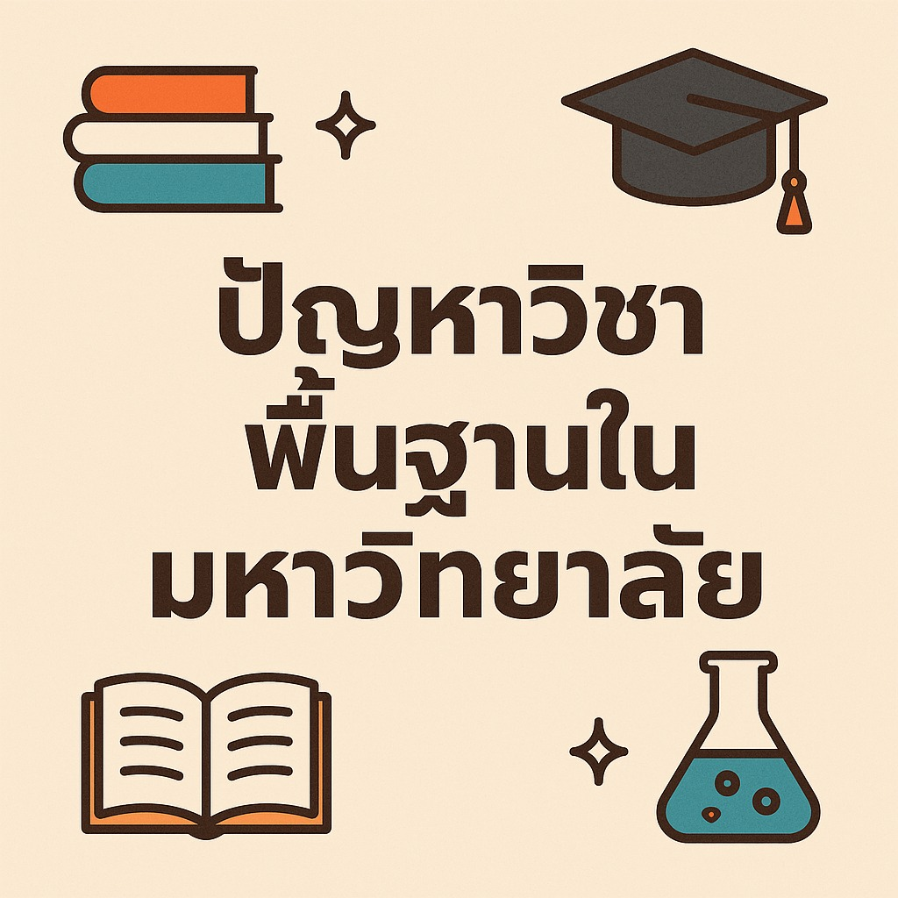

วิชาบริการจะเป็นพื้นที่ของความร่วมมือไม่ได้ ถ้าระบบยังผลักภาระให้ภาคผู้สอนโดยไม่ให้แรงจูงใจหรือความเป็นธรรม
{kind=link}

โพสต์นี้ตั้งคำถามสำคัญกับสิ่งที่มหาวิทยาลัยแทบทุกแห่งมี แต่ไม่ค่อยมีใครพูดถึงอย่างตรงไปตรงมา นั่นคือวิชาบริการ ซึ่งควรเป็นฟันเฟืองสำคัญของการเรียนรู้ข้ามสาขา แต่ในความจริงกลับกลายเป็นพื้นที่ที่ภาคผู้สอนต้องแบกรับภาระเพิ่มขึ้นเรื่อย ๆ โดยไม่มีแรงจูงใจและไม่มีโครงสร้างรองรับที่เป็นธรรม
กรณีของภาควิชาวิศวกรรมคอมพิวเตอร์ที่ต้องสอนวิชา “คอมพิวเตอร์และการโปรแกรม” ให้ทั้งคณะ ถูกใช้เป็นตัวอย่างชัดเจนว่าความต้องการแบบ customized จากภาคต่าง ๆ มักไหลเข้ามาต่อเนื่องทุกปี แต่ต้นทุนของการแยกหมู่ เปลี่ยนภาษา เปลี่ยนเนื้อหา และจัดระบบประเมินเฉพาะ กลับตกอยู่กับผู้สอนแทบทั้งหมดโดยไม่มีการชดเชยจริง
ปัญหาของวิชาบริการไม่ใช่เรื่องน้ำใจไม่พอ แต่คือระบบใช้ความเสียสละแทนการออกแบบแรงจูงใจ
สิ่งที่บทความนี้ชี้ชัดคือ ภาคผู้สอนวิชาบริการมักไม่ได้อะไรเพิ่มขึ้นอย่างมีนัยสำคัญ ไม่ได้เงินเพิ่ม ไม่นับภาระงานชัดเจน ไม่ได้ผลงานวิจัย และยังต้องสอนนิสิตที่หลายครั้งไม่ได้เห็นคุณค่าของวิชานั้นตั้งแต่ต้น เมื่อภาระเพิ่มแต่ reward ไม่ขยับ ระบบก็ย่อมค่อย ๆ ทำให้ความร่วมมือกลายเป็นความเหนื่อยล้า
มุมนี้สำคัญมาก เพราะปัญหาไม่ได้อยู่ที่อาจารย์ไม่อยากช่วย แต่คือมหาวิทยาลัยปล่อยให้การช่วยกันพึ่งพา น้ำใจ มากกว่า โครงสร้าง และเมื่อใช้ความเสียสละเป็นเชื้อเพลิงไปเรื่อย ๆ ในที่สุดคนที่แบกระบบอยู่ก็ย่อมหมดแรง
การแยกวิชาบริการเป็น standard กับ customized คือวิธีทำให้ความต้องการพิเศษมีต้นทุนที่มองเห็นได้
ข้อเสนอเรื่องการแบ่งวิชาบริการออกเป็น Standard Course กับ Customized Course เป็นแกนที่ pragmatic มาก เพราะมันไม่ได้ปฏิเสธความหลากหลายของผู้เรียน แต่ทำให้ทุกฝ่ายเห็นชัดว่า ถ้าต้องการการปรับพิเศษ ก็ต้องมีการรับผิดชอบต้นทุนร่วมกัน ไม่ใช่ผลักภาระไปให้ภาคผู้สอนฝ่ายเดียว
เมื่อสิ่งที่อยากได้เกินมาตรฐานต้องมีราคา มีงบ มีอัตราจ้าง หรือมีการจัดการสอนเอง ระบบก็จะเริ่มแยกได้ว่าอะไรคือความจำเป็นจริง และอะไรคือความสะดวกของผู้ใช้บริการที่ไม่ควรถูกแปลงเป็นภาระฟรีของคนอื่น
ความร่วมมือที่ยั่งยืนต้องเปลี่ยนภาคผู้ใช้บริการจากผู้ร้องขอ มาเป็นผู้ร่วมคิด ร่วมทำ และร่วมจ่าย
ชุดข้อเสนอท้ายโพสต์ เช่น การให้ภาระงานพิเศษ การจ่ายค่าตอบแทนตามต้นทุนจริง การตั้งราคากลางสำหรับวิชา customized และการเปิดพื้นที่ให้ภาคผู้ใช้บริการร่วมรับผิดชอบ ล้วนชี้ไปในทิศทางเดียวกันว่า มหาวิทยาลัยต้องย้ายความร่วมมือจากโมเดล ขอแล้วคนอื่นแบก ไปสู่โมเดล ร่วมคิด ร่วมทำ ร่วมจ่าย
บทสรุปที่ว่าความร่วมมือไม่ควรอยู่บนความเหนื่อยล้า จึงเป็นมากกว่าข้อเรียกร้องด้านการสอน แต่มันเป็นหลักการของการออกแบบองค์กรทั้งหมด หากมหาวิทยาลัยยังไม่จัดการเรื่องเล็กที่กระทบงานจริงอย่างวิชาบริการให้เป็นธรรม ก็ยากจะหวังให้ระบบใหญ่แข่งขันกับโลกภายนอกได้อย่างจริงจัง